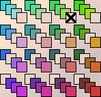
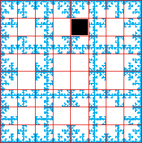

|  |
 |
| Here are the empty length 3 addresses for the fractal generated by the table shown. |
| Click each address to highlight the address in the picutre, display the forbidden triple, and
indicate the corresponding box in the table. |
|
| 1 -> 3 -> 4 is forbidden |
|